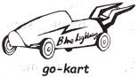

2019年北京市中考英语试题 · 阅读下列 第2篇 第24、25、26题
B
Blue Lightning

Sally loved cars more than anything else．This spring she thought of building a go-kart to enter for the Go-Go Race．So she asked her dad for help． "Well，" he said．"How about this： you do some research first and then come back to me with a design．"
A week later，Sally brought her notes and drawings to Dad．She named her go-kart "Blue Lightning"．Dad looked over her work，thinking．"Well，that's interesting，" he said．"Have a try．Just build Blue Lightning as you've designed．"
Over three weekends of hard work，Sally turned her design into a real，working go-kart and painted it light blue．Dad asked her to take it for a test drive．Sally agreed．After she did that，Sally drove back to Dad．"Well，" she said．"Now I know why you wanted me to have a test drive．"
"Oh，do you？" he said．"Please share．"
"When I drove fast，there was a lot of push back，" she said．"I think it's because of the lightning bolt （闪电） shape．"
"Very good!" Dad said．
"So，why didn't you tell me about that problem in the first place？" Sally asked．Dad laughed．"Where's the fun in that？ If you give a man a fish，he'll eat for a day．But if you teach a man to fish，he'll eat for a lifetime．"
Sally said，"I see．Anyway，designing is half the fun !"
Dad smiled．"Good．Sometimes，learning happens during the process．We learn how to do something right by doing it a few times first and making mistakes along the way．"
That encouraged Sally and she worked even harder．When she showed Dad her new go-kart，he nodded with pride．
Finally came the race．Sally wasn't worried about whether she would win-in her mind，she had already won，by building something better than ever before．
24．Sally thought of building a go-kart to ．（ ）
A．practice driving B．enter for a race C．play with friends D．do some research
25．What did Sally's dad ask her to do after she built the go-kart？（ ）
A．To have a test drive． B．To take a good rest．
C．To give it a cool name． D．To paint it light blue．
26．Sally's story mainly tells us that ．（ ）
A．winning a race is important B．fishing brings us a lot of fun
C．driving experience is necessary D．learning happens during the process